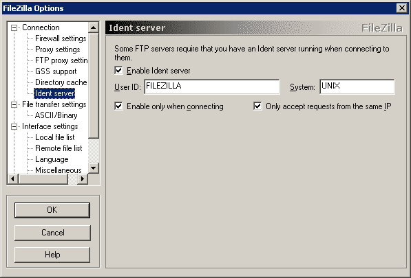

Ident server
Overview
Some servers require their users to have an ident server running as additional authentication method. FileZilla comes with an built-in ident server which can be enabled on the Ident server page.

Enable Ident server
This enabled the ident server. You've to fill the edit fields below with your user ID and your system. Don't get confused that system is UNIX, it is just the default value for system which most ident servers use, including the Windows ones.
Enable only when connection
If this option is selected, the Ident server will only be enable during connection establishment. However, some servery may require an active ident server at different situations, in this case just disable this option.
Only accept requests from the same IP
When enabled, only ident requests coming from the same host as the server you are connecting / connected to will be answered.